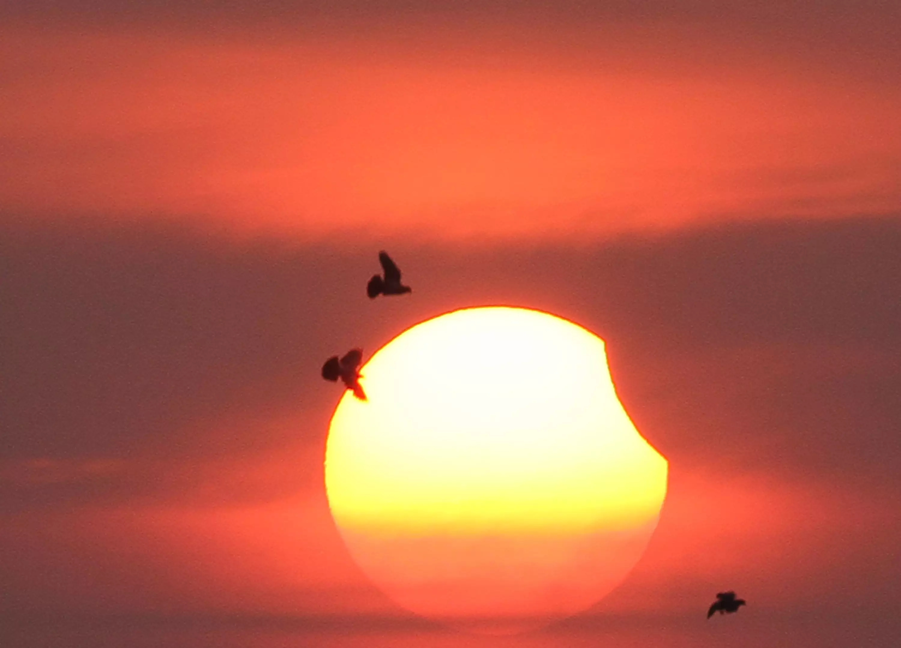

日食的形成
地球上某些地区的人们看到太阳表面全部或部分被遮掩的情况，这种现象就称为日食。
《日食是怎样形成的？》
日食的形成原理
日食现象是当月球绕地球转到太阳和地球中间时，如果太阳、月球、地球三者正好排成或接近一条直线，月球就会挡住了射到地球上的太阳光，月球身后的黑影正好落到地球上，这时就会发生日食现象。
日食出现的频次不定，一年中至多出现5次，且这5次一定都是日偏食；一年中至少有2次日食。
《日食现象出现的本质是什么呢？》
日食的分类
日食现象共有四种，分别是日全食、日偏食、日环食和全环食。
NO.1日全食
日全食发生时月球的黑影宽度刚好可以遮住整个太阳，只有当月球位于近地点时，此现象才会发生，这时月球的黑影范围最大，能最大范围遮住太阳光。


NO.2日偏食
日偏食是指一部分太阳光被月球阴影所遮挡，但另一部分光线仍然可以到达地球，此时太阳和月球只有一部分发生了重合。

NO.3日环食
日环食出现在月球处于远地点时，这时月球黑影的直径最小，太阳光可以从月球黑影的边缘照射出，形成一个圆形的光环。


NO.4全环食
环食发生在地球表面和月球本影最近的地方，当全环食发生的时候，随着月球、地球的相对运动，会先后出现环食、全食、环食。
全环食发生的概率非常小，20世纪共发生的228次日食中，只有6次全环食。

日食的观测
- 可以佩戴专用日食眼镜，专用日食眼镜可以有效过滤紫外线和红外线等，它们也被称为“日全食眼镜”或“日食观测镜”。
- 可以运用小孔成像的原理，在一张白纸上穿一个整齐的圆形小孔，通过小孔在另外纸面或其他界面上的投影观测日全食。
- 可以将手指交叉组成小孔来观测日食。
- 在生活中，阳光会穿过树叶之间的孔隙在地面形成斑驳的图案。在日食发生之时，如果你周围有许多大树，树荫的缝隙就会成为天然的小孔，树荫底下的小亮点都是太阳的小孔成像。
- 可以利用小型望远镜将日像投影在地面上，通过观测投影来观看日食，并描图记录，但要注意不能用望远镜直接观测日食。